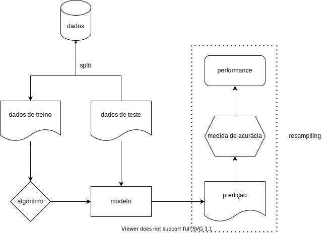
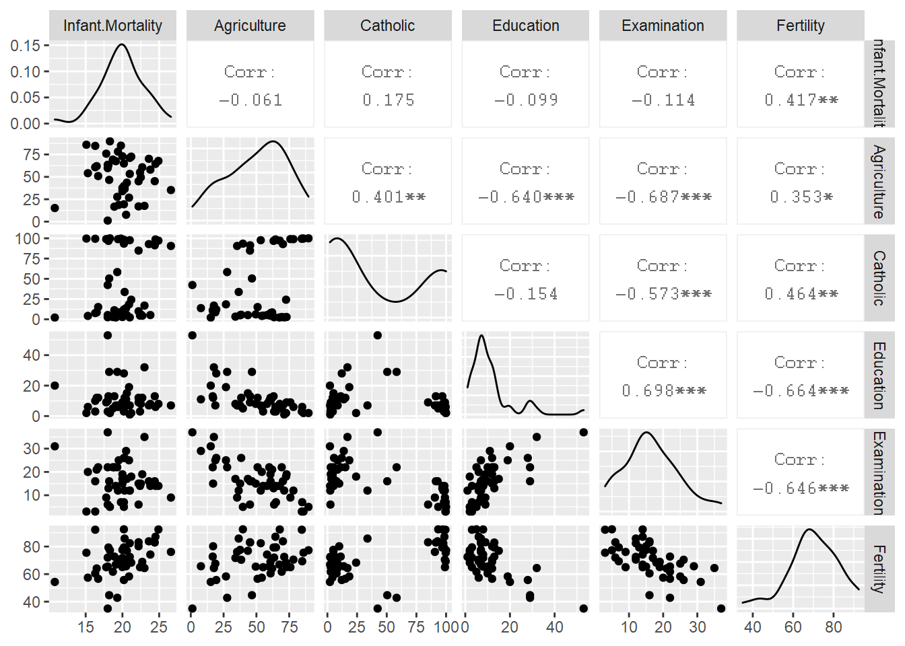
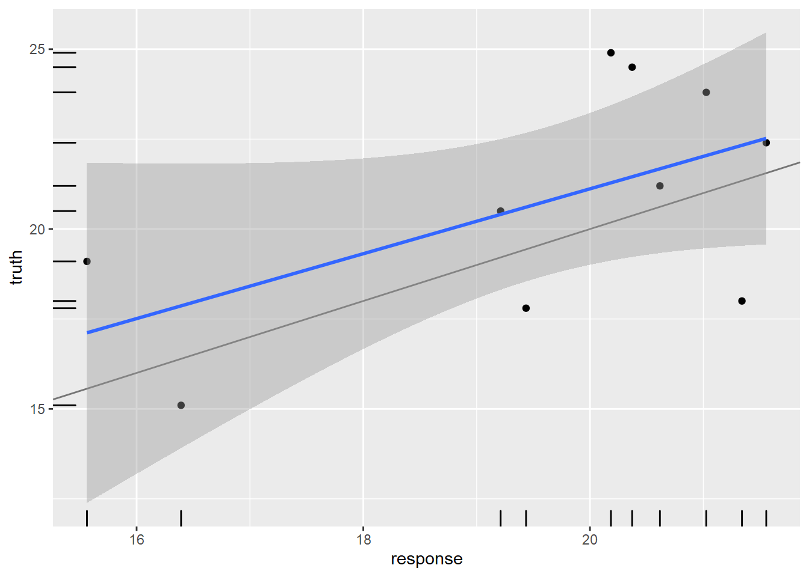

Esse é o primeiro post de uma série que irá tratar sobre o ecossistema {mlr3}. Ele é mais completo mas também muito mais complexo do que seu predecessor, o {mlr}, que teve sua versão inicial publicada no CRAN em 2013. O ecossistema permite um framework agnóstico (i.e. não depende dos algoritmos escolhidos), extensível e orientado a objeto, e, atualmente, permite vários tipos de tarefas, como classificação, regressão, análise de sobrevivência, forecasting, clustering, dentre outros. O {mlr3} tem diversas vantagens e elas ficarão claras ao longo dessas postagens.
O workflow padrão de machine learning consiste em

O processo de repetir esse workflow várias vezes, separando a amostra treino em várias partes diferentes e usando outras como fake test samples é chamado de resampling e é um processo vital para a etapa de calibragem do modelo e para evitar o overfitting (será abordado em futuros posts).
Dependendo dos dados, do tipo de tarefa e algoritmo escolhido, podem ser necessários vários filtros, como normalização, feature selection e tratamento de outliers e dados faltantes. Para esses casos, o {mlr3} tem novas soluções que se destacam com muita vantagem em relação não só ao seu predecessor {mlr} como também a outros frameworks de machine learning em R, como o {caret} e o {tidymodels}. Abordaremos esses pipelines nos próximos posts.
Nesse post serão trabalhadas as funcionalidades básicas do pacote. Para isso, usaremos um dos datasets inclusos no R, o swiss. Esse dataset consiste na medição padronizada da fertilidade e indicadores socioeconômicos de 47 províncias da Suíça em 1888.
# criando dataframe
data = swiss
# overview
skimr::skim(data)| Name | data |
| Number of rows | 47 |
| Number of columns | 6 |
| _______________________ | |
| Column type frequency: | |
| numeric | 6 |
| ________________________ | |
| Group variables | None |
Variable type: numeric
| skim_variable | n_missing | complete_rate | mean | sd | p0 | p25 | p50 | p75 | p100 | hist |
|---|---|---|---|---|---|---|---|---|---|---|
| Fertility | 0 | 1 | 70.14 | 12.49 | 35.00 | 64.70 | 70.40 | 78.45 | 92.5 | ▂▂▇▇▅ |
| Agriculture | 0 | 1 | 50.66 | 22.71 | 1.20 | 35.90 | 54.10 | 67.65 | 89.7 | ▃▃▆▇▅ |
| Examination | 0 | 1 | 16.49 | 7.98 | 3.00 | 12.00 | 16.00 | 22.00 | 37.0 | ▅▇▆▂▂ |
| Education | 0 | 1 | 10.98 | 9.62 | 1.00 | 6.00 | 8.00 | 12.00 | 53.0 | ▇▃▁▁▁ |
| Catholic | 0 | 1 | 41.14 | 41.70 | 2.15 | 5.20 | 15.14 | 93.12 | 100.0 | ▇▁▁▁▅ |
| Infant.Mortality | 0 | 1 | 19.94 | 2.91 | 10.80 | 18.15 | 20.00 | 21.70 | 26.6 | ▁▂▇▆▂ |
Dentre as varáveis disponíveis, podemos escolher modelar a mortalidade infantil Infant.Mortality baseada nas demais features, que são:
Fertility: Medida de fertilidade. Assim como a mortalidade infantil, está escalonada entre 0-100.Agriculture: Percentual de homens envolvidos em agricultura como ocupação.Examination: Percentual de alistados bem avaliados nos exames do exército.Education: Percentual dos alistados com educação superior ao primário.Catholic: Percentual de católicos (em oposto a protestantes).Começamos pela criação da task. Como queremos realizar predições para uma variável numérica contínua, é uma tarefa de regressão. O {mlr3} trabalha com a classe R6, o que torna seu manuseio mais parecido com outras linguagens orientadas a objeto, como o Python.
# importando pacote
library(mlr3verse)
# criando task
task_swiss = TaskRegr$new(
id = "swiss",
backend = data,
target = "Infant.Mortality"
)
# verificando
task_swiss## <TaskRegr:swiss> (47 x 6)
## * Target: Infant.Mortality
## * Properties: -
## * Features (5):
## - dbl (3): Agriculture, Catholic, Fertility
## - int (2): Education, Examination# visualizando
autoplot(task_swiss, type = "pairs")
Podemos verificar que apenas a fertilidade é linearmente correlacionada com a mortalidade infantil — quanto maior a fertilidade, maior a mortalidade —, e podemos esperar que tenha maior peso nas predições. As demais variáveis não apresentam correlação linear significativa com a variável de resposta. Entretanto, apresentam correlação moderada ou forte entre si, mas não a ponto de apresentar colinearidade, o que demandaria tratamento.
Agora selecionamos o algoritmo2 que será usado para treinar o modelo. Escolhi aqui o XGBoost. A lista completa pode ser acessada por essa lista estática, por essa lista dinâmica ou pela função mlr3extralearners::list_mlr3learners(). É importante deixar claro que os algoritmos não são implementados pelo ecossistema do {mlr3}, mas apenas o workflow. Isso significa que o algoritmo XGBoost, por exemplo, não está incluído nos pacotes do ecossistema, sendo necessário sua instalação3.
# definindo o learner
l_xgboost = lrn("regr.xgboost")
# checando
l_xgboost## <LearnerRegrXgboost:regr.xgboost>
## * Model: -
## * Parameters: nrounds=1, verbose=0
## * Packages: xgboost
## * Predict Type: response
## * Feature types: logical, integer, numeric
## * Properties: importance, missings, weightsVamos etender o que o objeto l_xgboost nos diz.
Como pode ver em parameters, não há nenhum hiperparâmetro configurado. Podemos acessá-los da seguinte maneira:
# acessando hiperparâmetros
head(as.data.table(l_xgboost$param_set))## id class lower upper levels nlevels
## 1: booster ParamFct NA NA gbtree,gblinear,dart 3
## 2: watchlist ParamUty NA NA Inf
## 3: eta ParamDbl 0 1 Inf
## 4: gamma ParamDbl 0 Inf Inf
## 5: max_depth ParamInt 0 Inf Inf
## 6: min_child_weight ParamDbl 0 Inf Inf
## is_bounded special_vals default storage_type tags
## 1: TRUE <list[0]> gbtree character train
## 2: FALSE <list[0]> list train
## 3: TRUE <list[0]> 0.3 numeric train
## 4: FALSE <list[0]> 0 numeric train
## 5: FALSE <list[0]> 6 integer train
## 6: FALSE <list[0]> 1 numeric trainComo o tunning de hiperparâmetros não é o assunto, vamos apenas configurar algumas coisas básicas:
# hiperparâmetros
l_xgboost$param_set$values = list(
# mandando o algoritmo parar depois de 10 iterações sem melhora no score
early_stopping_rounds = 10,
# mandando o algoritmo treinar mais lentamente
eta = 0.1,
# limitando profundidade da árvore
max_depth = 5,
# quantidade máxima de iterações
nrounds = 100
)
# verificando
l_xgboost## <LearnerRegrXgboost:regr.xgboost>
## * Model: -
## * Parameters: early_stopping_rounds=10, eta=0.1, max_depth=5,
## nrounds=100
## * Packages: xgboost
## * Predict Type: response
## * Feature types: logical, integer, numeric
## * Properties: importance, missings, weightsAs próximas etapas são o treino e a predição — trataremos de tunning e resampling nos próximos posts. Primeiramente, o split do dataset em treino e teste. Para isso, usaremos a função sample() associada a dois métodos do objeto task_swiss, o row_ids e nrow. O primeiro enumera os índices de cada linha:
# método row_ids
task_swiss$row_ids## [1] 1 2 3 4 5 6 7 8 9 10 11 12 13 14 15 16 17 18 19 20 21 22 23 24 25
## [26] 26 27 28 29 30 31 32 33 34 35 36 37 38 39 40 41 42 43 44 45 46 47Enquanto o segundo retorna a quantidade de linhas do dataset:
# método row_ids
task_swiss$nrow## [1] 47Assim, podemos selecionar os índice do dataset em duas amostras aleatórias:
# garantindo reprodutibilidade
set.seed(1)
# índices para amostra treino
train_set = sample(task_swiss$row_ids, 0.8 * task_swiss$nrow)
# índices para amostra teste
test_set = setdiff(task_swiss$row_ids, train_set)
# verificando
head(train_set)## [1] 4 39 1 34 23 14Com os índices selecionados, podemos realizar nosso treino apenas nos 80% escolhidos aleatoriamente da amostra. :
# treino
l_xgboost$train(task_swiss, row_ids = train_set)## [10:54:58] WARNING: amalgamation/../src/objective/regression_obj.cu:174: reg:linear is now deprecated in favor of reg:squarederror.
## [1] train-rmse:17.576906
## Will train until train_rmse hasn't improved in 10 rounds.
##
## [2] train-rmse:15.906290
## [3] train-rmse:14.400700
## [4] train-rmse:13.044603
## [5] train-rmse:11.824566
## [6] train-rmse:10.726380
## [7] train-rmse:9.739924
## [8] train-rmse:8.854416
## [9] train-rmse:8.054627
## [10] train-rmse:7.335248
## [11] train-rmse:6.688681
## [12] train-rmse:6.109197
## [13] train-rmse:5.587444
## [14] train-rmse:5.119703
## [15] train-rmse:4.699141
## [16] train-rmse:4.312882
## [17] train-rmse:3.971956
## [18] train-rmse:3.657235
## [19] train-rmse:3.366412
## [20] train-rmse:3.103006
## [21] train-rmse:2.865532
## [22] train-rmse:2.647503
## [23] train-rmse:2.448978
## [24] train-rmse:2.268340
## [25] train-rmse:2.106096
## [26] train-rmse:1.954928
## [27] train-rmse:1.814957
## [28] train-rmse:1.688345
## [29] train-rmse:1.572037
## [30] train-rmse:1.467292
## [31] train-rmse:1.374028
## [32] train-rmse:1.281157
## [33] train-rmse:1.196213
## [34] train-rmse:1.116619
## [35] train-rmse:1.040653
## [36] train-rmse:0.975037
## [37] train-rmse:0.909925
## [38] train-rmse:0.852961
## [39] train-rmse:0.803740
## [40] train-rmse:0.757104
## [41] train-rmse:0.713849
## [42] train-rmse:0.672327
## [43] train-rmse:0.634015
## [44] train-rmse:0.595590
## [45] train-rmse:0.560054
## [46] train-rmse:0.527118
## [47] train-rmse:0.498028
## [48] train-rmse:0.469220
## [49] train-rmse:0.441418
## [50] train-rmse:0.417214
## [51] train-rmse:0.394707
## [52] train-rmse:0.373728
## [53] train-rmse:0.353631
## [54] train-rmse:0.334691
## [55] train-rmse:0.317351
## [56] train-rmse:0.301512
## [57] train-rmse:0.286208
## [58] train-rmse:0.270775
## [59] train-rmse:0.256299
## [60] train-rmse:0.243574
## [61] train-rmse:0.230665
## [62] train-rmse:0.218585
## [63] train-rmse:0.208203
## [64] train-rmse:0.197173
## [65] train-rmse:0.186830
## [66] train-rmse:0.177357
## [67] train-rmse:0.168414
## [68] train-rmse:0.160592
## [69] train-rmse:0.152636
## [70] train-rmse:0.144257
## [71] train-rmse:0.137330
## [72] train-rmse:0.130671
## [73] train-rmse:0.123992
## [74] train-rmse:0.117501
## [75] train-rmse:0.111853
## [76] train-rmse:0.106568
## [77] train-rmse:0.101401
## [78] train-rmse:0.096543
## [79] train-rmse:0.091538
## [80] train-rmse:0.087073
## [81] train-rmse:0.082596
## [82] train-rmse:0.078167
## [83] train-rmse:0.074190
## [84] train-rmse:0.070875
## [85] train-rmse:0.067654
## [86] train-rmse:0.064362
## [87] train-rmse:0.061019
## [88] train-rmse:0.058160
## [89] train-rmse:0.055346
## [90] train-rmse:0.052694
## [91] train-rmse:0.050063
## [92] train-rmse:0.047896
## [93] train-rmse:0.045524
## [94] train-rmse:0.043504
## [95] train-rmse:0.041372
## [96] train-rmse:0.039341
## [97] train-rmse:0.037627
## [98] train-rmse:0.035837
## [99] train-rmse:0.034289
## [100] train-rmse:0.032903# verificando
l_xgboost$model## ##### xgb.Booster
## raw: 106.3 Kb
## call:
## xgboost::xgb.train(data = data, nrounds = 100L, watchlist = list(
## train = <pointer: 0x000000001b936bd0>), early_stopping_rounds = 10L,
## eta = 0.1, max_depth = 5L, objective = "reg:linear")
## params (as set within xgb.train):
## eta = "0.1", max_depth = "5", objective = "reg:linear", validate_parameters = "TRUE"
## xgb.attributes:
## best_iteration, best_msg, best_ntreelimit, best_score, niter
## callbacks:
## cb.print.evaluation(period = print_every_n)
## cb.evaluation.log()
## cb.early.stop(stopping_rounds = early_stopping_rounds, maximize = maximize,
## verbose = verbose)
## # of features: 5
## niter: 100
## best_iteration : 100
## best_ntreelimit : 100
## best_score : 0.032903
## best_msg : [100] train-rmse:0.032903
## nfeatures : 5
## evaluation_log:
## iter train_rmse
## 1 17.576906
## 2 15.906290
## ---
## 99 0.034289
## 100 0.032903Como podemos ver, na primeira iteração o modelo obteve rmse4. de 17.5, o que é alto considerando a escala [1-100] da mortalidade infantil. O modelo foi aumentando sua precisão no treino até 0.03, o que não significa que sua performance permaneça nesse nível quando extrapolado para a amostra teste ou novos dados, mas é um bom sinal. O esperado é que a performance real do modelo, após ser aplicado à amostra teste, fique entre a iteração inicial e final. Se ficar melhor do que a performance do teste, alguma coisa certamente está errada.
Vamos verificar qual a performance real após realizarmos as predições na amostra teste:
# predições
preds = l_xgboost$predict(task_swiss, row_ids = test_set)
# verificando
preds## <PredictionRegr> for 10 observations:
## row_id truth response
## 8 24.9 20.18500
## 11 24.5 20.37197
## 13 19.1 15.56200
## ---
## 31 15.1 16.39225
## 36 17.8 19.43584
## 40 20.5 19.21186# acurácia
preds$score(list(
msr("regr.rmse"),
msr("regr.mae")
))## regr.rmse regr.mae
## 2.787566 2.414017# visualizando
autoplot(preds)## `geom_smooth()` using formula 'y ~ x'
A rmse do modelo na amostra teste ficou em apenas 2.79 unidades, o que é uma performance muito boa!
No {mlr3} é chamado de learner.↩︎
Aqui trabalharemos apenas com um, mas em posts futuros utilizaremos de diversas formas — pipelines com diferentes features, stacking etc.↩︎
Tanto no objeto criado quanto nas listas citadas constam os pacotes onde os algoritmos foram implementados.↩︎
Raiz do Erro Médio Quadrático↩︎